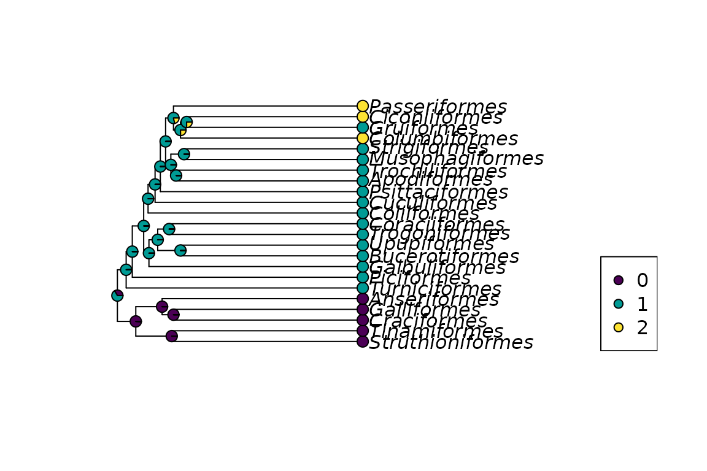

Ancestral Sequence Reconstruction
Klaus Schliep
Graz University of Technologyklaus.schliep@gmail.com
2025-04-23
Source:vignettes/Ancestral.Rmd
Ancestral.RmdIntroduction
These notes describe the ancestral sequence reconstruction using the phangorn package (Schliep 2011). phangorn provides several methods to estimate ancestral character states with either Maximum Parsimony (MP) or Maximum Likelihood (ML). For more background on all the methods see e.g. (Felsenstein 2004) or (Yang 2006).
Parsimony reconstructions
To reconstruct ancestral sequences we first load some data and reconstruct a tree:
library(phangorn)
fdir <- system.file("extdata/trees", package = "phangorn")
primates <- read.phyDat(file.path(fdir, "primates.dna"),
format = "interleaved")
tree <- pratchet(primates, trace=0) |> acctran(primates) |> makeNodeLabel()
parsimony(tree, primates)## [1] 746For parsimony analysis of the edge length represent the observed
number of changes. Reconstructing ancestral states therefore defines
also the edge lengths of a tree. However there can exist several equally
parsimonious reconstructions or states can be ambiguous and therefore
edge length can differ. In phangorn all the ancestral
reconstructions for parsimony used to be based on the fitch algorithm
(below version 3.0) and needed bifurcating trees. However trees can get
pruned afterwards using the function multi2di from
ape. Recently we replaced the acctran routine with a method
based on the sankoff algorithm adopting the algorithm for joint
reconstruction (Pupko et al. 2000) and
breaking ties at random. This has the additional benefit that it allows
us to infer phylogenies with multifurcations.
“MPR” reconstructs the ancestral states for each (internal) node as if the tree would be rooted in that node. However the nodes are not independent of each other. If one chooses one state for a specific node, this can restrict the choice of neighboring nodes (figures 2 and 3). There is also an option “POSTORDER” which is only a one pass algorithm, which is useful for teaching purposes. The function acctran (accelerated transformation) assigns edge length and internal nodes to the tree (Swofford and Maddison 1987).
anc.pars <- anc_pars(tree, primates)The plotSeqLogo function is a wrapper around the from
the ggseqlogo function in the ggseqlogo package (Wagih 2024) and provides a simple way to show
proportions of a nucleotides of ancestral states (see figure 1).
plotSeqLogo(anc.pars, node=getRoot(tree), 1, 20)Fig 1. Ancestral reconstruction for a node.

Fig 2. Ancestral reconstruction using MPR.
Likelihood reconstructions
phangorn also offers the possibility to estimate ancestral states using ML. The advantages of ML over parsimony is that the reconstruction accounts for different edge lengths. Currently a marginal construction (see [Yang (2006)](Koshi and Goldstein 1996)) and the joint reconstruction (Pupko et al. 2000) is implemented. Joint reconstructions is only for models without rate variation (e.g. gamma models) or invariant sites.
fit <- pml(tree, primates)
fit <- optim.pml(fit, model="F81", control = pml.control(trace=0))We can assign the ancestral states according to the highest likelihood (“ml”): and the highest posterior probability (“bayes”) criterion: where is the joint probability of states at the tips and the state at the root and are the estimated base frequencies of state . Both methods agree if all states (base frequencies) have equal probabilities.
anc.ml <- anc_pml(fit)The differences of the two approaches for a specific site (17) are represented in the following figures.

Fig 4. Ancestral reconstruction the using the maximum likelihood.
#plotAnc(anc.bayes, 17)
#title("Bayes")Fitting for discrete comparative data
Often have already a phylogeny and only want estimate the ancestral reconstruction for this tree. This is a common problem in phylogentic comparative methods and we can use the function ace in the ape (Paradis and Schliep 2019), fitDiscrete in the geiger (Pennell et al. 2014) or fitMK in the phytools (Revell 2012) package. Here we want to show how to fit these models using optim.pml.
First we load a tree and create some data.
data("bird.orders")
x <- c(rep(0, 5), rep(1, 18))
x[c(20,22,23)] <- 2
x <- factor(x)
names(x) <- bird.orders$tip.label
dat <- phyDat(x, "USER", levels=c(0,1,2))We than set up the pml object and optimize the model. Instead of optimizing the edge length we only optimize the rate.
fit <- pml(bird.orders, dat)
fit_ER <- optim.pml(fit, optEdge = FALSE, optRate=TRUE,
control = pml.control(trace=0))
fit_ER## model: Mk
## loglikelihood: -16.47
## unconstrained loglikelihood: 0
##
## Rate matrix:
## 0 1 2
## 0 0 1 1
## 1 1 0 1
## 2 1 1 0
##
## Base frequencies:
## 0 1 2
## 0.3333 0.3333 0.3333
##
## Rate: 0.007846We can also fit the symmetric (model=“SYM”) or ordered metristic model (model=“ORDERED”).
fit_SYM <- optim.pml(fit, optEdge = FALSE, optRate=TRUE, model="SYM",
control = pml.control(trace=0))
fit_SYM## model: SYM
## loglikelihood: -15.31
## unconstrained loglikelihood: 0
##
## Rate matrix:
## 0 1 2
## 0 0.000e+00 0.2747 1.604e-06
## 1 2.747e-01 0.0000 1.000e+00
## 2 1.604e-06 1.0000 0.000e+00
##
## Base frequencies:
## 0 1 2
## 0.3333 0.3333 0.3333
##
## Rate: 0.00678We can compare the estimate with the one from ace from ape.
fit_ace <- ace(x, bird.orders, model="SYM", type = "d")## Warning in sqrt(diag(solve(h))): NaNs producedThe log-likelihood values differ slightly as in phangorn the values
get multiplied by the state frequencies. Thus if we add
log(1/3) as we have three states to ace estimate the two
estimates are almost identical.
fit_SYM$logLik## [1] -15.31
fit_ace$loglik+log(1/3)## [1] -15.31## [1] "Mean relative difference: 1.229e-07"
More complicated models can be applied using defining the rate matrix as shown in the vignette Markov models and transition rate matrices. The “ARD” model is currently not available as phangorn only fits reversible models.
Session info
## R version 4.5.0 (2025-04-11)
## Platform: x86_64-pc-linux-gnu
## Running under: Ubuntu 24.04.2 LTS
##
## Matrix products: default
## BLAS: /usr/lib/x86_64-linux-gnu/openblas-pthread/libblas.so.3
## LAPACK: /usr/lib/x86_64-linux-gnu/openblas-pthread/libopenblasp-r0.3.26.so; LAPACK version 3.12.0
##
## locale:
## [1] LC_CTYPE=C.UTF-8 LC_NUMERIC=C LC_TIME=C.UTF-8
## [4] LC_COLLATE=C.UTF-8 LC_MONETARY=C.UTF-8 LC_MESSAGES=C.UTF-8
## [7] LC_PAPER=C.UTF-8 LC_NAME=C LC_ADDRESS=C
## [10] LC_TELEPHONE=C LC_MEASUREMENT=C.UTF-8 LC_IDENTIFICATION=C
##
## time zone: UTC
## tzcode source: system (glibc)
##
## attached base packages:
## [1] stats graphics grDevices utils datasets methods base
##
## other attached packages:
## [1] phangorn_2.12.1.1 ape_5.8-1.3
##
## loaded via a namespace (and not attached):
## [1] Matrix_1.7-3 gtable_0.3.6 jsonlite_2.0.0 dplyr_1.1.4
## [5] compiler_4.5.0 tidyselect_1.2.1 Rcpp_1.0.14 parallel_4.5.0
## [9] jquerylib_0.1.4 scales_1.3.0 systemfonts_1.2.2 textshaping_1.0.0
## [13] yaml_2.3.10 fastmap_1.2.0 lattice_0.22-6 ggplot2_3.5.2
## [17] R6_2.6.1 labeling_0.4.3 generics_0.1.3 igraph_2.1.4
## [21] knitr_1.50 htmlwidgets_1.6.4 backports_1.5.0 tibble_3.2.1
## [25] checkmate_2.3.2 desc_1.4.3 munsell_0.5.1 pillar_1.10.2
## [29] bslib_0.9.0 rlang_1.1.6 fastmatch_1.1-6 cachem_1.1.0
## [33] xfun_0.52 fs_1.6.6 quadprog_1.5-8 sass_0.4.10
## [37] cli_3.6.4 withr_3.0.2 pkgdown_2.1.1 magrittr_2.0.3
## [41] digest_0.6.37 grid_4.5.0 lifecycle_1.0.4 nlme_3.1-168
## [45] vctrs_0.6.5 evaluate_1.0.3 glue_1.8.0 farver_2.1.2
## [49] codetools_0.2-20 ragg_1.4.0 ggseqlogo_0.2 colorspace_2.1-1
## [53] rmarkdown_2.29 tools_4.5.0 pkgconfig_2.0.3 htmltools_0.5.8.1